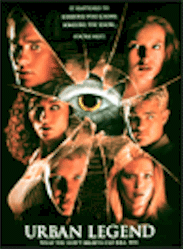
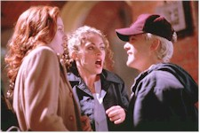
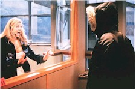

Contents | Features | Reviews | Books | Archives | Store |
 |
|
| Movie Credits | Buy It! |
Urban Legend
Review by Gregory Avery
Posted 25 September 1998
|  | Directed by Jamie Blanks. Starring
Alicia Witt, Jared Leto, Written by Silvio Horta and Don Roos |
An "urban legend" is supposed to be about things like pet baby crocodiles who now happily reside in the local sewer system, a taxicab which shows up in the darnedest of times and places, or raccoons who congregate regularly at night on the Central Park riding path to play pinochle. The things to which the characters in this movie refer sound more like pranks than "urban legends," stuff about Pop Rocks and soda, or animals in microwave ovens. A college professor specializing in "urban folklore" addresses his class of students, who look rather hirsute even by movie standards, on the story about the babysitter who gets crank phone calls that turn out to be coming from inside the house. "Anyone ever heard that one?" he asks. Yeah, I have, I replied: 1979's When a Stranger Calls, which had a sensational opening sequence that made it a word-of-mouth surprise hit. See? Sometimes movies can be bigger than life. But even before that sequence, the body count has started to rise. A menacing stalker, wearing a familiar outfit that still disguises the face, has started perpetrating malfeasance without apparent reason or cause. The first victim is seen listening to a recording of Bonnie Tyler's "Total Eclipse of the Heart." As if that weren't horrifying enough, ... But, wait a minute, doesn't this also seem familiar?
Since the surprise success of Scream, which had a sensational opening sequence that made it a word-of-mouth hit, the recent revival of the slasher movie has, frankly, has me a bit baffled. Why bring back a sub-genre of movie which died under the weight of its own repetitiousness? After years of capering by that jolly jester, Freddy Krugger, screenwriter Kevin Williamson came up with the answer: attitude. With the rise of home video, the characters would comment on the predictability of the conventions of the very kind of movie in which they were existing! So hip, so glib, so "in", so knowing, so -- David Letterman-ish. Never mind that Scream tried to create scares by the very same things that it purported to be satirizing.
The main differences between Urban Legend and a movie like Terror Train, made to capitalize on the success of Friday the 13th, is that the sexual talk is a little trashier, the young characters a little more flip almost to the point of annoyance, and the music "stings" are much louder in Digital Stereo. The soundtrack is absolutely up-to-date: one can hear a New Swing song by the Cherry Poppin' Daddies being played in the frat house party scene. Cultural icons make strategic appearances: Brad Dorif puts in a cameo appearance; Robert Englund, successfully making the transition into character roles, plays a college professor; John Neville, one of the Quorum of Dark Men in The X Files, plays the college dean (No wonder they're having trouble on campus). Fortunately, Loretta Devine is the campus security cop (and apparently, during the climatic scenes, the only campus cop), whose role model is Pam Grier in Coffy.
Otherwise, much has stayed the same. The girls fall into various categories of babe-a-rific, with appropriately matching hair colors, and the heroine is a virginal-looking type who, it turns out, has a Dreadful Secret in her past. As for the guys, there's a "frosh" with white hair, a creep with darker hair, and a reporter for the campus newspaper who is played by Jared Leto, his jet-black hair cut short and his face bearing that Sensitive Type look. The killings turn out to have something to do with a massacre that occurred 25 years ago in a campus dormitory building that is abandoned for some reason has not been torn-down (Guess where the climax occurs, and, no, it's not at McDonalds). The heroine goes about trying to alert people that Something is Going On, but is either dismissed or otherwise proves to be highly ineffectual, at least as far as keeping her friends from being iced. She is, of course, the last one to face having terrible things done to her, but not before the killer, identity exposed, says with sparkling wit, "Yeah, I guess you can say I'm -- 'nutty’!" After which -- harooph! -- said villain is given a dispatching which, at least from the film's viewpoint, is supposed to be suitable.
The girls cower and run and cower in dark hallways, and you're always wondering why they never think to use a well-aimed elbow toward the solar plexus. But while the film is formulaic, I'm guessing that's exactly what draws people to these movies, just as people were essentially drawn to the Andy Hardy and Abbott and Costello and Seventies disaster movies in the past: they know exactly what to expect, so they can turn their heads off for an hour or so and just watch, and the filmmakers, perfectly knowing this, give them exactly what they expect, using all the clichés they're expected to use, cordially telegraphing every plot turn and twist and wrapping it all up in a much more neater package than Friday the 13th was delivered in (Some of the cinematography, here, by James Chressanthis, is particularly good). Thus: the comforts of a formula along with the vicarious enjoyment of murder and mayhem.
What is surprising, though, is that, even though people are being throttled and garroted, there's not really not a whole lot of violence on-screen. Like sex, violence, or at least the messy type, seems to be disappearing from mainstream commercial movies. The altruistic may want to head to the lobby when the microwave oven scene comes on, but there turns out to be nothing to worry about, because you don't really see anything. The camera jumps-back and averts its gaze before the audience even has to.
As for Urban Legend itself, it's not a masterpiece, but, I've seen worse, this year (I'm still recovering from the deadliness of Harry Connick, Jr.'s scenes in Hope Floats). Alicia Witt, as plucky Natalie, comports herself well enough. But it's Rebecca Gayheart, as Natalie's friend Brenda, who contributes the performance that most sticks in your mind afterwards. Her face framed by auburn hair that seems to swirl at times, her character both warm and forthrightly appealing, yet alluring and glittering with all sorts of unexplored, or unrevealed, potentials underneath. And the director, Jamie Blanks, and screenwriter, Silvio Horta, come up with a twist ending that doesn't disappoint. But the movie's gonna play exactly the way the filmmakers, and the studio, want it to, no matter what anyone has to say about it: it'll make bucks at the box office during the opening weekend, maybe the one after that, too, before it's shuttled off to bargain houses as the Fall movies open, then cable and video, where people can invite their friends over, watch it with some beverages, some pizzas, and lots of popcorn, and enjoy it as much as they want.
Contents | Features | Reviews | Books | Archives | Store
Copyright © 1999 by Nitrate Productions, Inc. All Rights Reserved.